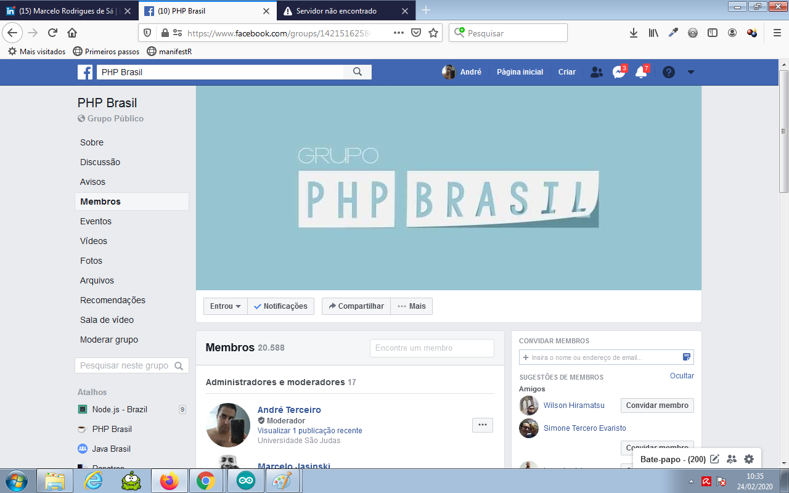

O Facebook me baniu por direitos autorais, o que não faz o menor sentido, já que compartilhei um meme besta que estava no Whatsapp, que é do Facebook. Criei outra conta e estou tentando voltar a ser moderador do PHP Brasil.
